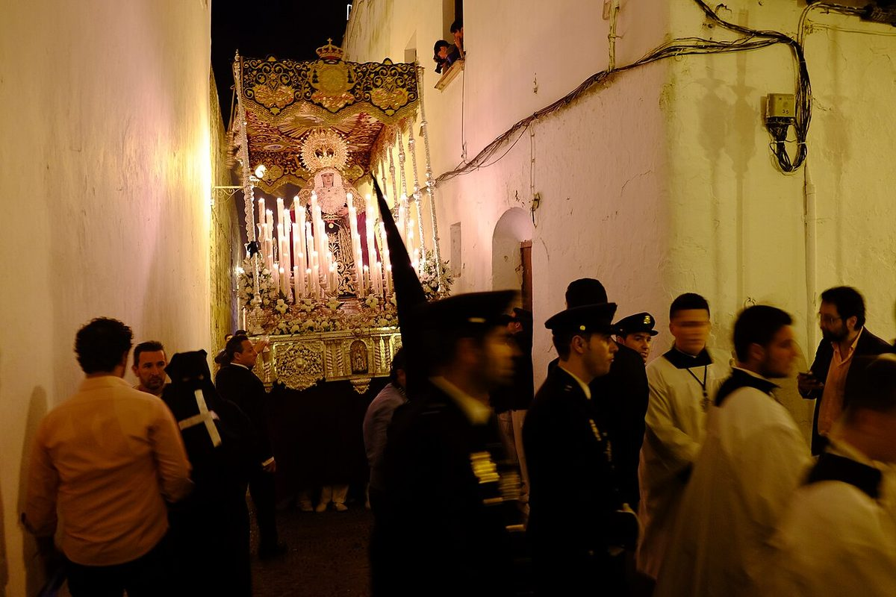

Voto doble · Elecciones: julio de 2023 y junio de 2024
En las europeas, la brecha entre ricos y pobres se dispara
En las europeas de 2024 la brecha de participación entre las zonas más ricas y las más pobres pasó de 15 a 22 puntos
Por Nacho G. del Álamo ·
En las europeas del 9 de junio de 2024 votó el 49,2 % del censo de residentes, frente al 70,4 % de las generales de 2023. La caída no fue igual en todas partes. En las secciones censales con más renta, la participación bajó de 77,5 % a 60,9 %; en las de menos renta, de 62,1 % a 38,7 %. La distancia entre unas y otras pasó de 15,4 a 22,2 puntos.
Dato: verificable y reproducible
Ver Alhaurín el Grande en el mapa →Ver Arcos de la Frontera en el mapa →Ver Lepe en el mapa →
La pregunta: ¿Quién deja de votar cuando la elección parece lejana?
Menos de un año, veinte puntos menos
DatoEntre las generales de julio de 2023 y las europeas de junio de 2024 pasaron menos de once meses. La participación sobre el censo de residentes en España cayó del 70,4 % al 49,2 %.
DatoEsta pieza ordena las 34.549 secciones censales de España por su renta media y las agrupa en diez tramos iguales. En el tramo más rico, la participación cayó 16,6 puntos; en el más pobre, 23,4.
PatrónEn las dos elecciones la participación sube tramo a tramo con la renta, pero en las europeas la diferencia se agranda. En las generales, el tramo más rico votó 15,4 puntos más que el más pobre; en las europeas, 22,2.
No es un efecto del censo
DatoEl censo de las europeas incluye a los ciudadanos de otros países de la Unión que se inscriben para votar, y en algunas zonas son muchos. Para descartar que eso explique la brecha, la pieza repite el cálculo solo con las 9.410 secciones donde los extranjeros son menos del 5 % de la población. El resultado es el mismo: la distancia entre el tramo más rico y el más pobre pasa de 14,8 puntos en las generales a 23,7 en las europeas.
Dónde cayó más
DatoEntre los 420 municipios de más de 20.000 habitantes, las mayores caídas están en Andalucía: 9 de los diez primeros. Alhaurín el Grande (−30,7), Arcos de la Frontera (−30,5), Lepe (−29,3), Coín (−29,1), Moguer (−29,0) puntos.
DatoEn Arcos de la Frontera, donde casi no hay extranjeros (2,7 % de la población), votó el 64,4 % en julio de 2023 y el 33,9 % en junio de 2024.
DatoDonde menos cayó, entre los municipios de más de 20.000 habitantes: Pozuelo de Alarcón (−13,4), Majadahonda (−14,6), Basauri (−14,7), Torrelodones (−14,7).
La comparación con 2019
DatoEn las europeas de 2019 votó el 64,3 %, mucho más que en las de 2024, pero no son comparables: se celebraron el mismo día que las municipales, el 26 de mayo de 2019.
Sobre el terreno
DatoContando el voto de los españoles residentes en el extranjero, la participación oficial de las europeas del 9 de junio de 2024 fue del 46,39 % (17.652.007 votantes de 38.050.286 electores), frente al 60,73 % de 2019. Esta pieza usa la participación de los residentes en España. Fuentes: 1, 2
Lo que no sabemos
- HipótesisPor qué la brecha de renta crece en unas elecciones que movilizan menos. Esta pieza no ha contrastado ninguna explicación con dos fuentes independientes.
- HipótesisSi influyen la fecha de la elección o el interés por la campaña: son hipótesis sin comprobar.
Dato: verificable y reproducible. Patrón: relación descriptiva, sin causa. Hipótesis: explicación posible que aún no tiene dos fuentes independientes.
Los datos
| Tramo de renta (de menos a más) | Renta desde (€) | Generales 2023 | Europeas 2024 | Caída |
|---|---|---|---|---|
| 1 | 8.797 | 62,1 | 38,7 | −23,4 |
| 2 | 15.553 | 67,5 | 44,0 | −23,5 |
| 3 | 16.935 | 68,6 | 45,9 | −22,7 |
| 4 | 18.131 | 69,5 | 47,3 | −22,2 |
| 5 | 19.252 | 70,0 | 48,2 | −21,8 |
| 6 | 20.404 | 70,4 | 48,8 | −21,6 |
| 7 | 21.722 | 70,8 | 49,6 | −21,2 |
| 8 | 23.451 | 71,5 | 51,0 | −20,5 |
| 9 | 25.839 | 73,4 | 54,2 | −19,2 |
| 10 | 30.068 | 77,5 | 60,9 | −16,6 |
Método y fuentes
- Qué se compara
- Las 34.549 secciones censales de España con datos de las dos elecciones, en diez tramos de renta, y los 420 municipios de más de 20.000 habitantes.
- Límites
- Participación sobre el censo de residentes en España (sin CERA). El censo de las europeas incluye a ciudadanos de la Unión inscritos; por eso se repite el cálculo en las secciones con pocos extranjeros. Correlación ecológica: no dice qué personas dejaron de votar.
- Metodología completa
- Cómo se calculan los porcentajes, el modelo, los gemelos y los escaños
- Fuentes
- Ministerio del Interior, resultados electorales por mesa (Infoelectoral). Congreso 2004-2023 vía pollspaindata, commit ee5ecda; municipales 2007-2023 de los ficheros de Infoelectoral
- Ministerio del Interior, resultados por mesa de las elecciones al Parlamento Europeo de 2019 y 2024 (Infoelectoral)
- INE, Atlas de Distribución de Renta de los Hogares 2023 (renta, edad, población), vía ineAtlas.data
- Autoría
- Nacho G. del Álamo
- Revisión de datos y texto
- Nacho G. del Álamo, 7 de octubre de 2026
- Publicado · actualizado
- 7 de octubre de 2026 · 8 de octubre de 2026
- Correcciones
- Ninguna. Historial del Atlas